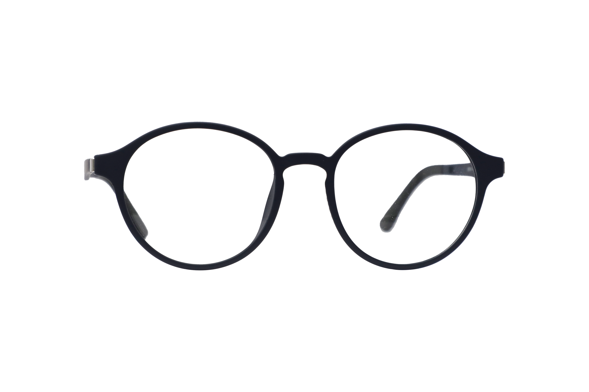
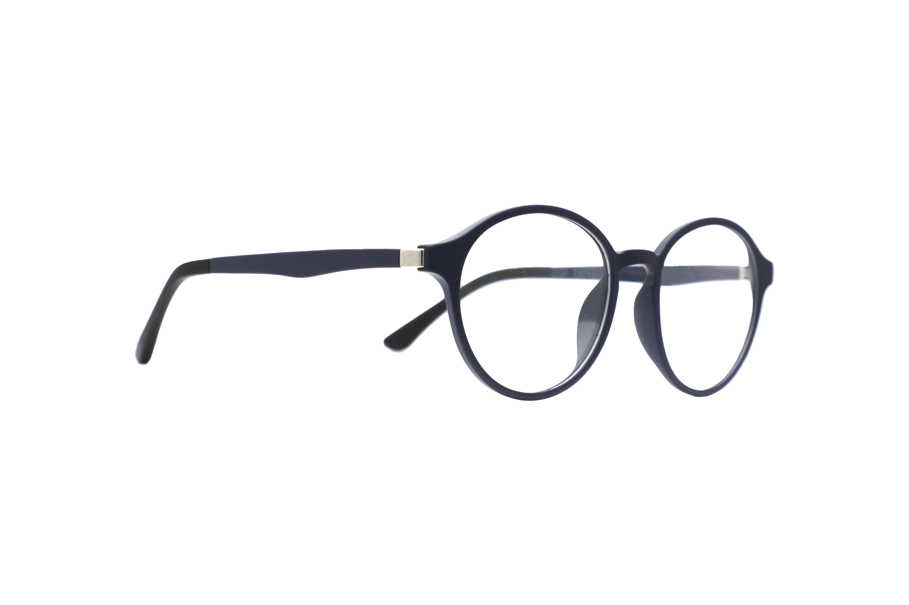

VIRTUAL TRY-ON · 试戴体验
看见适合自己的样子
用镜头试一试这副圆框眼镜，找到你喜欢的感觉。
◌
点击「打开摄像头」
将脸部对准屏幕，就可以开始试戴
准备好了，点击按钮开始
本次试戴 · 01

经典圆框
黑色镜框 · 简约轻盈
100%
请摘下现有眼镜或请家人帮忙操作。试戴仅供款式参考，尺寸和舒适度以实物为准。

照片留在本机；保存按钮会下载到你的设备。
用镜头试一试这副圆框眼镜，找到你喜欢的感觉。
点击「打开摄像头」
将脸部对准屏幕，就可以开始试戴

黑色镜框 · 简约轻盈
